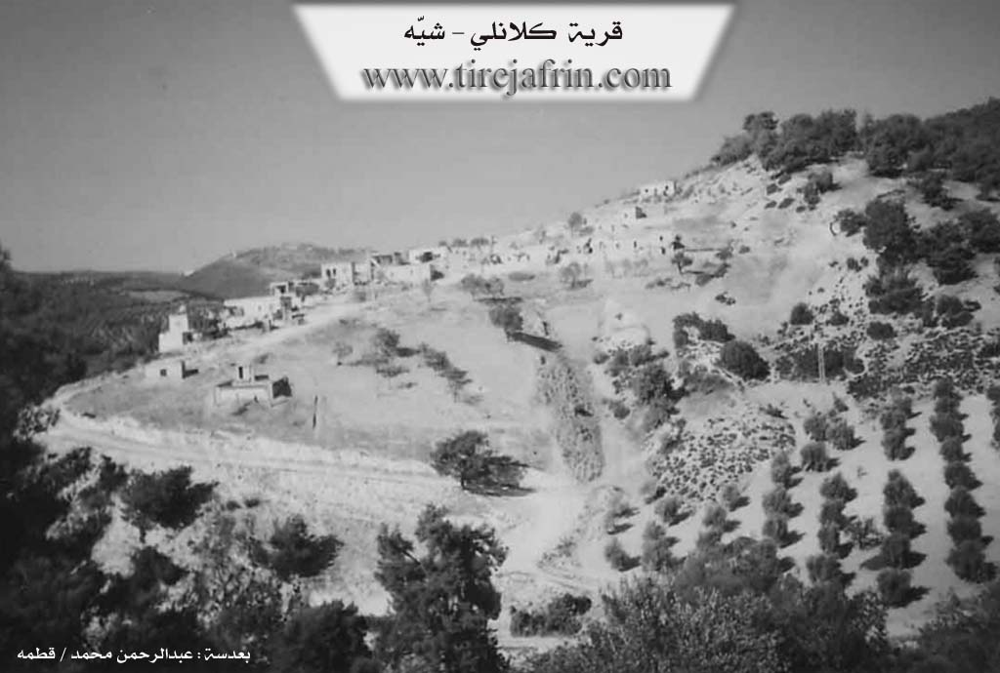

General Information
Nahiya (Subdistrict)
Şiyê
Also Known As
Kalanli, Kela, Kêlê, al-Malsa'a, الملساء, كلانلي
Families, Clans, etc.
Ce'fû, Ezo Zewcî, Hebê Birîm, Heskînê, Heso, Kalo, Kurce, Mala Mamoyê Bilîzbê, Mala Mûsê, Mala Şurbê, Mehmedê Zînkê, Ore, Osman Hebeş, Seraşê Hemê, Xelîl Mihmed, Şêx Birîm

Photos

Basic Information about Kela
Source: Ax û Welat
Etymology: Derived from Keleş meaning bandits or brigands who historically hid in the area
Foundation Date/Period: Approximately 200 years ago
Springs: Kaniya Kela
Hills: Çiyayê Siq, Çiyayê Hêreblîc, Dirrê Zerek, Reka Turmişa
Ruins: Viraqine
Trees: Daristana Hemî Hebeş, Daristana Qûla Sosê, Daristana Qûla Guran
Other Landmarks: Geliyê Şiyê, Aşê Kelo
Source: Khalil Sino
Foundation Date/Period: 400 years ago
Hills: Çiyayê Bilêl
Wells: Bîra Dungan, Bîra Melber
Other Landmarks: Çemê Zal
Summaries
I. Summary from TirejAfrin Site of Kela (English)
According to the book "Mountain of the Kurds" (جبل الكرد) (Afrin City) Geographic Study by Dr. Mohammed Abdo Ali (الدكتور محمد عبدو علي):
Kela, Kalanli, al-Malsa'a (المسلاء) /228n, 560m/:
- "Kela" (كه لا) is the name of a Kurdish tribe. The Arabic name has no connection to the popular name.
- A small village located on the southern side of the middle of Kalanli valley (وادي كلانلي). Its location is forest and rugged. There is a spring "Kela" (كلا) K.Kela with sweet water beside the village and near the valley bottom. The village location has a picturesque nature.
According to the book: Afrin... Her River and Green Hills by writer Abdulrahman Mohammed (عبدالرحمن محمد) from Qatma village (قرية قطمه):
Kalanli (كلانلي): A farm in Mountain of the Kurds (جبل الكرد), belonging to Sheikh al-Hadid District (ناحية شيخ الحديد), Afrin (منطقة عفرين), Aleppo Governorate (محافظة حلب).
It is a small farm located on an elevation and mountain plateau surrounded by three streams except the eastern one. It is bordered to the north by deep valley and Haj Bilal village (قرية حاج بلال), to the south by high mountain chain and Turmishkanli village (قرية طورمشكانلي), to the west by deep stream and high mountain chain planted with olive and forest trees and Sheikh Jiqallali Foqani and Tahtani village (قرية شيخ جقاللي فوقاني وتحتاني), and to the east by high mountain chain planted with forest trees and Ma'sara Jiq village (قرية معصرة جق).
The number of its houses reaches about 15 houses and its age is 125 years. Its dwellings are stone-clay with wooden roofs. The modern ones are concrete. The inhabitants work in olive, walnut and vine cultivation. It connects with the sub-district and neighboring villages by recently paved road. Electricity network is available since 2006 (2006).
Prepared and executed by: Site manager of Tireij Afrin: Abdulrahman Haji Othman (عبدالرحمن حاجي عثمان)
20/12/2013
II. Summary from Ax û Walat Transcript of Kela
Source: https://www.youtube.com/watch?v=SwEy5Av5BFo
The village of Kela is located in the Şiyê district of the Efrîn region in northwestern Syria. It sits upon a mountain ridge surrounded by valleys and forests. The history of the settlement dates back approximately two hundred years. According to local oral history the name Kela is derived from Keleş which refers to bandits or brigands. In earlier times these outlaws utilized the rugged terrain and dense forests to ambush travelers and hide from authorities. Once the bandits abandoned the area the village was formally established. The founder was an individual named Hebê Birîm who migrated from Çeqelo and belonged to the lineage of Ezo Zewcî. He constructed the first permanent dwelling in the village which is known locally as Viraqine.
The social structure of Kela is defined by specific families rather than large tribal confederations. The documentary identifies several core families including Hebûyê Birîm and Ore and Mehmedê Zînkê and Şêx Birîm and Osman Hebeş. Other prominent lineages include the Kurce family and the Kalo family. Residents describe historical intermarriage with the Ce'fû family and people from Şiyê. Due to the lack of services such as schools and paved roads many inhabitants have migrated to Efrîn city or Heleb and Şam over the decades. However roughly half the population remains or maintains contact with their ancestral land.
Daily life in Kela is dictated by its geography. The land is described as qiraç meaning rocky and difficult to cultivate. Because modern tractors cannot navigate the steep slopes farmers continue to use traditional animal plowing with oxen and donkeys. They cultivate olives and grapes and sumac and figs. The village is bordered by distinct natural landmarks including the forests of Daristana Hemî Hebeş and Daristana Qûla Sosê and Daristana Qûla Guran as well as the heights of Çiyayê Hêreblîc and Çiyayê Siq.
The most significant landmark is Kaniya Kela which is a perennial spring located south of the village. It serves as the primary water source and a gathering place for the community. In the past a mill known as Aşê Kelo operated near the spring in the 1950s and 1960s. This site also served as an educational hub where a Xûce would teach children from neighboring villages before formal schools were built. To the west runs the deep valley of Geliyê Şiyê. A local teacher named Fexrî explains that the name Şiyê originates from the word for washing because residents historically descended into the valley to wash their clothes and bathe in the streams.
215
THE VILLAGE OF KELA
10.1.2016
The village of KELA is a small village on a mountain, adorned within a green forest. It is affiliated with the Şiyê district of Efrîn canton and is located 8 km south of the town of Şiyê. The name of the village comes from the word (Keleş), because in the past, bandits or KELEŞ used to settle in place of the village, blocking the way for travelers and hiding themselves in this area, but after the bandits fled and disappeared, the village was built. The first person to settle in the village was ((Hebê Birîm)), and then the village became populated.
216
There are 6 families in the village:
The families of Heboyê Birîm, Kundê, Ûrê, Mihemedê Zênkê, Şêx Birîm, and Osman Hebeş.
There are 15 houses and 250 people living in the village, but many of the village residents have settled in the cities of Efrîn and Cindirêsê due to the lack of services in the village.
The village of KELA was built on (Çiyayê KELA), which is to the west and south of the village. Below the village and to the north is ((Geliyê Şiyê)), which is a deep valley, and it was named this because the people of the village and the surrounding villages used to go to this valley to wash their clothes and garments. The water of ((Geliyê Şiyê)) remains and flows for a long time in the summer season, and farmers water their fields from it, and plant fruit and vegetable gardens beside it.
A spring named ((KANIYA KELA)) is below the village to the south. It is said that this spring was found by a male goat, and the water of this spring never decreases in any season. The people of the village get their drinking water from this spring, and shepherds also water their flocks at it. Besides that, the villagers plant vegetable gardens by the spring and water them with the spring's water. There was a mill by the spring, where the villagers would grind their wheat into flour and carry their provisions, and its ruins are still visible today.
217
Due to the abundance of trees and forests around the village, the weather conditions in the surroundings are very good and healthy, and it is the most suitable place for tourism. The KELA spring has also made this place a destination for trips and excursions, so on holidays and during the spring and summer seasons, people from the village and cities visit this area and spend their day by this spring.
In 2008, the residents of the village brought the spring water through pipes to all the houses in the village, and it became the main source of water for the people.
To the northwest of the village of KELA are the villages of Hec Bilêl and Alkana, and the village of Xelîl is to the north, but to the south is the village of Erendê, which is the village that the people of the village have the most relations with, and they also get their things and needs from the village of Erendê, and the children of the village also study there due to the lack of a school. The village of Şiketa is also to the east.
Previously, the residents of the village made their living by cutting and making poles, charcoal, and cutting firewood, and they would sell it to the people of other villages in the region. But now the villagers make their living from agriculture, such as olives, vines, sumac, along with other fruit trees that they plant in front of their houses or in their yards, such as almonds, apricots, pomegranates, etc. Also, some of the villagers plant fields of barley, wheat, chickpeas, and
218
lentils. Along with agriculture, all the villagers own livestock such as sheep and goats, as well as chickens, and they sell their products like cheese, yogurt, clarified butter, butter, ghee, and eggs in the markets of Şiyê and Efrîn. Some people also plow with a team of oxen and cultivate the steep or terraced fields in all the surrounding villages, because all the fields in the village are steep and cannot be plowed with a tractor. Also, for transportation, the villagers own animals such as donkeys, mules, and horses, because their region is very mountainous, and through them, they get all their needs and cultivate their fields.
A martyr named ((Dijwar)) died in the National Liberation War.
The women of the village, along with the men, do almost all the work of farming and animal care.
The nature of the village is rich with pine forests, so to the south of the village is the forest of (Xecê), which consists of pine trees and hawthorn bushes, teasel, and terebinth. To the east is the forest of (Hemî Hebeş), which is between the villages of KELA and Şiketa. To the west is the forest of (Qula Sûsê), and the forest of (Qula Guran), which is above the village to the east. The forest of (Çiyayê Siq) is opposite the village to the east, but behind the village and to the north is (Çiyayê Hêrê Bilîçê). Many animals live in these
219
forests, such as the boar, which is an animal that lives in herds in the forest, along with them are jackals, foxes, wolves, porcupines, hedgehogs, and rabbits. Along with these animals, many birds also live there, such as blackbirds, partridges, owls, little owls, hoopoes, bee-eaters, and swifts.
Hunters of animals and birds come from all parts of the region and hunt in these forests and have a good time.
Due to the lack of services and the underdevelopment of the village, the rate of migration from the village was high, so many villagers went to Cindirêsê, Efrînê, Helb, and Şamê, but their connection to the village was never cut, and they always visit their village, especially on holidays.
Transcripts
Foundation/Origin Information of Kela
Founded by Hebîb Birîm of the Aso Zewcî family, who moved from the village of Çeqelê.
Source: Ax û Walat Transcript
Founded by several families, including the Dîkê, Şêx Simayîlê, and Qureyşê, who migrated from neighboring villages like Qesîmê, Qorzêlê, and Şorbe.
Source: Halil Sino Transcript
Possible Village Name Meaning of Kela
"Kela" is the name of a Kurdish tribe.
Source: TirejAfrin Site
The name originates from a fortress ("kela") that once stood on the mountain above the main spring, used as a hideout by bandits ("çete" or "keleş").
Source: Ax û Walat Transcript
Its name originates from a historical castle (Keleh) upon whose ruins the village was built. This castle is tied to the legend of Mîrê Kor (the Blind Prince).
Source: Halil Sino Transcript